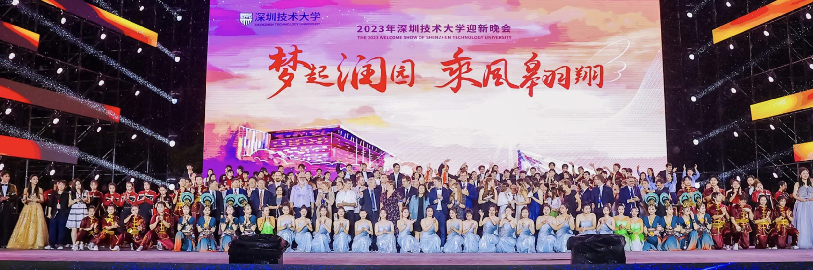

深圳技术大学 |
|

学校充分借鉴和引进德国、瑞上等发达国家一流技术大学先进的办学经验，致力于培养本及以上层次具有国际视野.工匠精神和创新创业能力的高水 平丁程师，设计师等高素质应田型人才，努力建成，流的应里型技术大学，着力建面向国家和地方发展需要的，以工学为主、管理学、艺术学等协调发展的学科体系，并按计划分布发展和优化学科在局。目前,学校已开设 26个专业，所开专业涵盖工学、理学、管理学、艺术学、文学5个 学科门类:至 2025年年，学校将继续大力加强专业建设，全面发展工学、理学、 经济学、管理学、艺术学、文学等 |